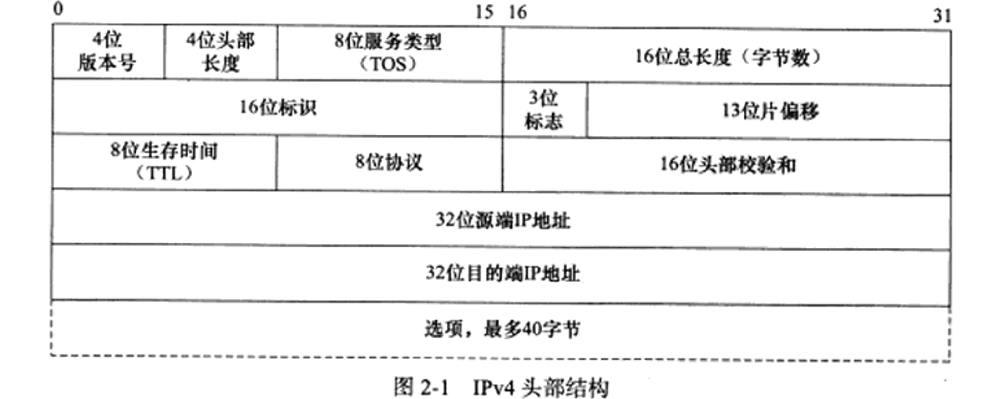
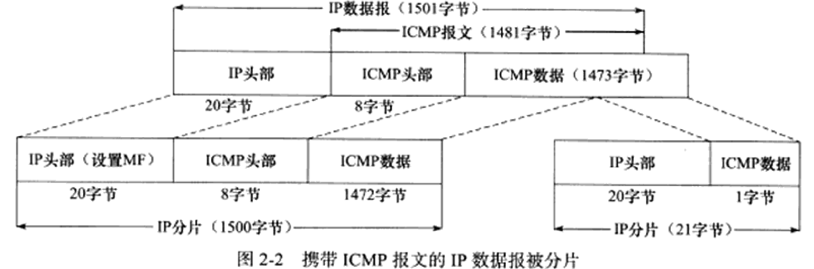
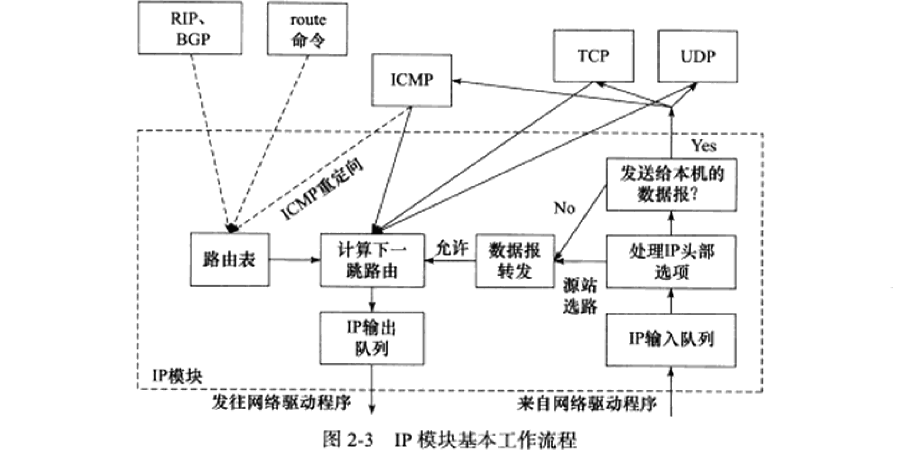
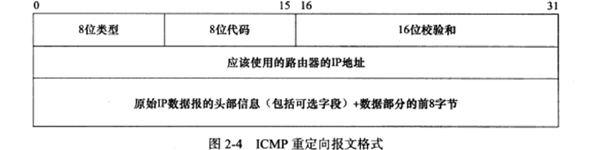
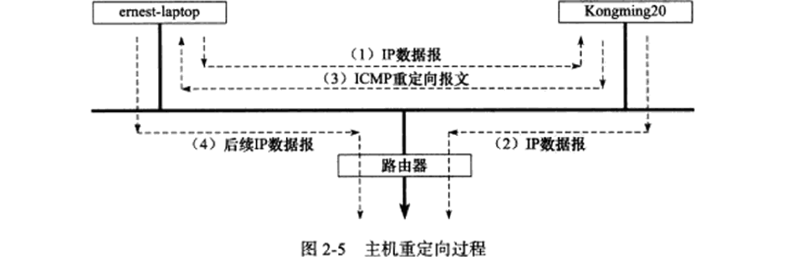
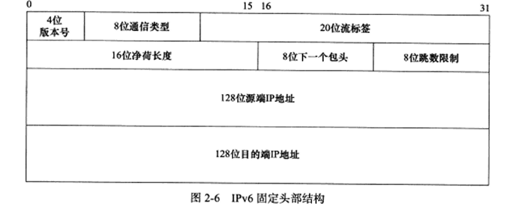
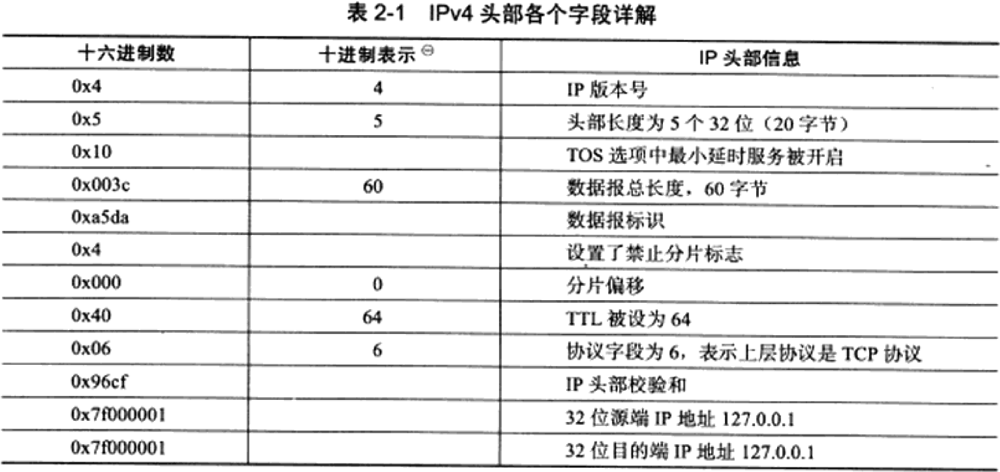
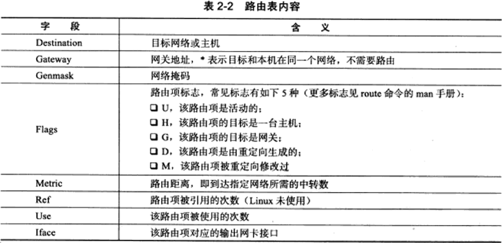
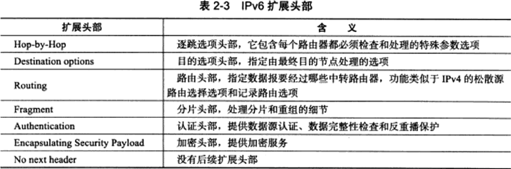

（未完成）Linux高性能服务器编程 第2章 IP协议详解
文章目录
IP头部信息出现在每个IP数据报中，用于指定IP通信的源端和目的端IP地址，指导IP分片和重组，指定部分通信行为IP数据报的路由和转发发生在除目标机器之外的所有主机和路由器上，它们决定数据报如何转发- 32位的IPv4地址已经耗尽，可使用128位IPv6地址
IP服务的特点
- IP协议为上层协议提供无状态、无连接、不可靠的服务
无状态(stateless)：IP通信双方不同步传输数据的状态，即所有IP数据报都是相互独立、无上下文关系- 缺点：无法处理乱序和重复的IP数据报，因为IP协议无法检测乱序和重复。（IP数据报头部也有提供标识字段来唯一标识一个IP数据报，但它仅用于处理IP数据报的分片和重组，不用于指定接收顺序）
- 优点：简单高效，不需为保持通信状态而分配资源，也不需每次传输都携带状态信息。（UDP和HTTP也是无状态，HTTP浏览器连续两次网页请求之间无关联）
无连接(connectionless)：IP通信双方都不维持对方的任何信息，即上层协议每次发送数据都必须指定对方的IP地址不可靠：IP协议不能保证IP数据报准确地到达接收端，它只承诺尽最大努力。上层协议需实现数据确认、超时重传等机制以实现可靠传输- IP数据报发送失败的例子：
- 中转路由器根据IP数据报头部TTL字段发现它在网络上存活太久，会将其丢弃，并返回ICMP错误消息（超时错误）给发送端
- 接收端通过校验发现IP数据报不正确，会将其丢弃，并返回ICMP错误消息（IP头部参数错误）给发送端
- IP数据报发送失败的例子：
IPv4头部结构
- IPv4的头部通常为20字节，除非含有可变长的选项。结构如图2.1 
- IPv4的头部：
- 4位
版本号指定IP协议版本：IPv4的版本号是4，其他IPv4的扩展（如SIP和PIP）有不同的版本号，头部结构也不同 - 4位
头部长度是该头部的长度，单位是32bit（4字节），IP头部的最大长度是15*4=60字节 - 8位
服务类型(Type Of Service，TOS)包括：- 3位优先权字段，现已被忽略
- 4位TOS字段，分别为：最小延时、最大吞吐量、最高可靠性，最小费用。根据实际需要，至多能将其中一个置为1，如ssh和telnet需要最小延时，ftp需要最大吞吐量
- 1位保留字段，必须置0
- 16位
总长度是整个IP数据报的长度，单位是字节，IP数据报的最大长度为65535字节，但长度超过MTU的会被分片传输 - 16位
标识唯一地标识主机发送的每一个数据报，其初始值随机，每发送一个数据报就+1，分片时每一个分片的标识都相同 - 3位
标志字段：- 第一位保留
- 第二位DF(Don’t Fragment)表示禁止分片，此时若IP数据报长度超过MTU将被丢弃并返回ICMP差错报文
- 第三位MF(More Fragment)表示更多分片，除数据报的最后一个分片外，其他分片都要将其置1
- 4位
IPv4头部结构
使用tcpdump观察IPv4头部结构
IP分片
IP路由
IP模块工作流程
路由机制
路由表更新
IP转发
重定向
ICMP重定向报文
主机重定向实例
IPv6头部结构
IPv6固定头部结构
IPv6扩展头部
       